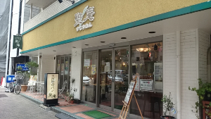

しげくに屋55ベーカリー
高円寺北口にあるパン屋さん。
パンはショーケースに入っていて、レジで注文して取ってもらうのでいつも行列ができている。
おすすめは丸パンとコーンパン、あとクロックムッシュ。
住所：東京都杉並区高円寺北3-22-9
tel：03-5356-7617
営業時間:10:00~21:00
定休日:月・火
BAKERY SASA
笹塚にあるパン屋さん。
さっそく杉並区ではないですが(笑)
夫の友人がやっているのですが、パンはもちろんコーヒーやスープもおいしい。
クロワッサンとメロンパンがおいしくておすすめ。
住所：東京都東京都渋谷区笹塚2-7-10 1F
tel:03-3375-5805
営業時間:8:00～19:00
定休日:火、第２、第４水曜
浜田山 NORTH
浜田山にあるパン屋さん。
駅からは少し歩くけど、アットホームな雰囲気でとても良い。
色々な種類のパンがあるけど、田舎パンと天然酵母のごまクロワッサンが絶品！
住所：東京都杉並区浜田山4-13-14
tel:：03-3316-3003
営業時間:10:00～19:00
定休日:日・祝
聖庵

阿佐ヶ谷にあるパン屋さん。
おしゃれなパン屋さんではないですが、天然酵母パンが素朴でおいしいです。
子供にも安心してあげられます。
リーズナブルなランチは、パン食べ放題！
住所：東京都杉並区阿佐谷南３丁目１−２２
tel:：03-6276-9313
営業時間:8:00～20:00
定休日:なし
SONKA
新高円寺から南阿佐ヶ谷の間くらい、五日市街道沿いにあるパン屋さん。
フランスパンのみのお取り扱い。
バゲットサンドがおいしくて、イートインでも食べられます。
小さいけどキッズスペースあり！
住所：東京都杉並区成田東２丁目３３ 成田東２丁目３３−９
tel:：03-5913-8551
営業時間:10:00～18:00(売切れ次第CLOSE)
定休日:火・木
オーロールベルゲン
高円寺駅から新高円寺駅に向かう商店街の中にあるパン屋さん。
おしゃれなパン屋さんではなく昔ながらのパン屋さんです。
どれも素朴でおいしくて、しかもリーズナブル。
住所：東京都杉並区高円寺南３丁目２１−１４ 成田東２丁目３３−９
tel:：03-3315-5567
営業時間：9:00～20:00
定休日:水
PANYA komorebi
西永福にあるパン屋さん。
小さいお店だけどいつも混みあってます。
おすすめはあんバターサンド！
住所：東京都杉並区永福3-56-29
tel:：03-6379-1351
営業時間：9:00～19:00
定休日:月(月曜祝日の場合は火)
丸栄ベーカリー
方南町にあるパン屋さん。
昔ながらの素朴なパン屋さんです。
ハチクロにも登場していたので名前を聞いたことある方もいるのでは？
住所：東京都杉並区方南2-20-13 1F
tel:：03-3313-3836
営業時間：6:30～20:00
定休日:日
ブーランジェリー コチュウ
阿佐ヶ谷のはずれにあるパン屋さん。
隠れ家的な名店です。
クロワッサンがおいしいです！
住所：東京都杉並区阿佐谷北4-20-6
tel:03-3330-2100
営業時間：6:00-17:30
定休日:日＋不定休